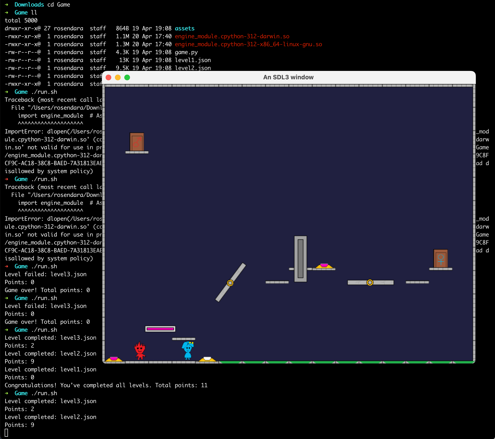
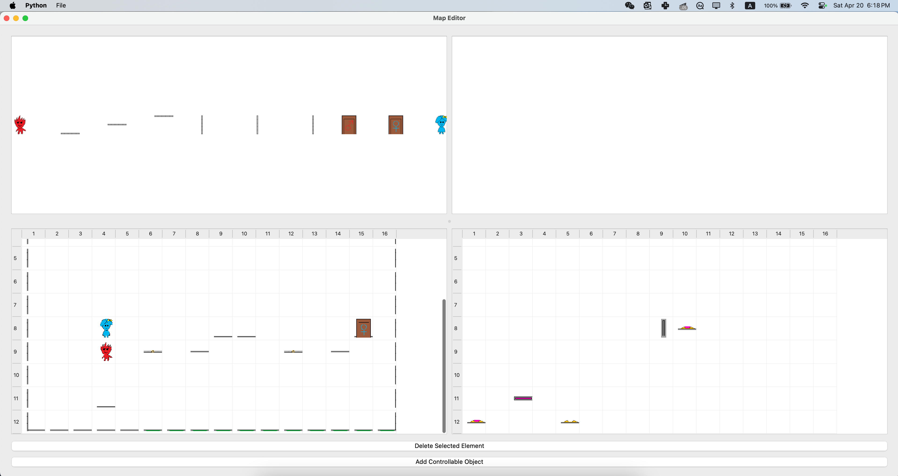
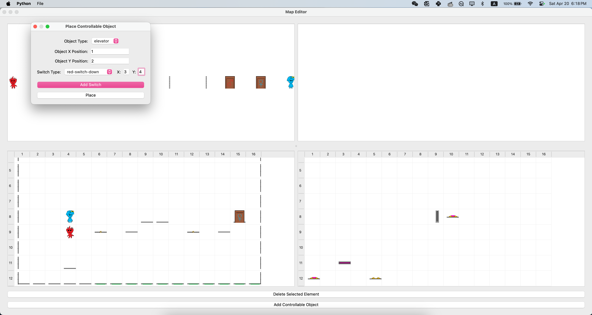

Fire Boy and Water Girl
Yue Zhang(zhang.yue24@northeastern.edu)
Game Video
Screenshots
  Documentation
Game Architecture

Link to the binary
Post Mortem
Project Reflection
The core achievement of our project was the development of a custom contact listener for the Box2D physics engine, enhancing the interaction between characters "Boy" and "Girl" and their environment in our game. This innovation allowed for precise collision handling and differentiation of physical interactions based on the entity types involved. By tracking contact normals and managing collision data efficiently, we significantly enriched the gameplay experience, providing a foundation for more nuanced and realistic physics responses.
Despite these successes, we faced challenges in maintaining performance with increasing complexity and ensuring that physical responses remained intuitive under varied scenarios. The intricacies of accurately processing and responding to collisions required a delicate balance between realism and playability, highlighting areas for optimization and refinement. Given additional development time, our focus would shift towards enhancing the efficiency and realism of collision handling. We would explore advanced algorithms for collision detection and invest in fine-tuning the physics engine's responses to various interactions. This would not only improve game performance but also open up new possibilities for innovative gameplay mechanics, further elevating the player's experience.